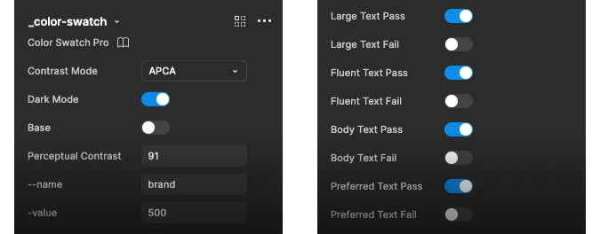

Create Color Palettes for Figma in 6 Prompts
Color Swatch Pro pairs with Claude and the Figma MCP server to create a fully documented design system color palette in minutes. See how it works.
Prompt… Palette… Done
Six automated steps replace hours of manual work. Claude connects through the Figma MCP server, reads the component structure, and builds your color palette and design tokens end to end.
Generate Color Variables
Claude creates primitive color variables directly in Figma with your chosen palette and naming conventions.
Build Swatch Components
Every color variable becomes a fully documented swatch — token name, HEX, HSL, and contrast data included.
Calculate Contrast
WCAG and APCA contrast values are computed and written into each swatch automatically. No manual testing.
Optimize for Dark Mode
Colors are evaluated and adjusted for both light and dark mode usage with token references for each.
Toggle Pass/Fail
Accessibility indicators flip on for large, fluent, body, and preferred text thresholds across every swatch.
Organize the Palette
Auto layout arranges everything into a clean documentation grid — ready to share with designers and engineers.
Watch the full Figma MCP walkthrough
See how Claude and Color Swatch Pro work together to build a complete, accessible color system in minutes.
Read the full video transcript (20 minutes, 6 prompts)
Introduction 0:00
Color Swatch Pro is a professional grade design system color swatch component that you can use to document all of your colors in Figma. Up until this month, it would have taken hours to get Color Swatch Pro applied to all of your design system colors. But now with Claude and the Figma MCP server, we can automate the entire process in just a few minutes. And I'm going to walk you through how to build a great looking design system color palette documentation set of colors in just a few minutes.
So the first thing you need to do is head into the Figma community Look for Color Swatch Pro and purchase the file. It's a $9 purchase, but what I'm about to show you in this video is going to save you hours of time. So you'll already have ROI on your purchase by the end of this video. So once you download Color Swatch Pro, you'll see inside the file, there is a Figblog.
There's a sample of the color palette that we're going to create. and then there is the color component itself. I'll make another video that covers all of the different options that you have available in this color palette, but to give you a sense of it, you can switch from WCAG to APCA, contrast ratings, And you can set in the component whether or not the color contrast is suitable for various text sizes
or meets double or triple A standards. And you can also customize it to show and hide your colors in dark mode. And if you want to, or if you're using design system or design tokens, you can also indicate the light mode and dark mode token. And all of that can be automated with Claude.
So let's just jump in and get started. Once you have Color Swatch Pro added to your Figma account, we're going to create a new document and you can import Color Swatch Pro as a published design system component, or you can simply come in here and grab the component itself, paste it into your file. And then I'm just going to call this component and then I'm going to create a new page.
I'm going to call it colors. So right now I don't have any colors in this file. My design system doesn't have any colors. The first thing I need to do is create a set of colors.
And we're going to use Claude for that. So you'll need to have the Figma console server installed. Next thing we need to do is connect our file to Claude and we do that with the Figma console bridge. So you'll need to go up to plugins and then manage plugins and look for Figma desktop bridge and install that.
Once it's installed click on it to open it and now that Figma MCP is ready we can hop into Claude. I've created a brand new Claude project and your Claude might have some memories in it. So the way these prompts work in your version of Claude might be a little bit different than mine. But what I'm going to do is show you just a series of five prompts that you can use to go from no color palettes to a professional grade color palette
using Claude to automate the configuration of Color Swatch Pro. So the first thing we need to do is create some colors. I'm gonna start with a brand primary and a neutral color palette. So we need to prompt Claude to do that.
And the first thing we need to do is make sure that Claude can actually see our file. We'll just confirm that Claude and Figma are talking. And so let's just name this, I'm gonna name this design system. And now that I have the file named, I'll go back to Claude.
And I'm going to ask it, can you see the file design system? Claude will check just to see that it's able to access the file. So sometimes it takes Figma a little bit of time to update the file name. Claude does see it.
It still sees the file named untitled instead of design system. But I feel confident now that we can get going. It does see the page name colors here. So it lets me know that Claude does see the file that I'm currently working in.
Prompt 1: Create color variables 4:09
So the first thing we need to do is put in a prompt, create a set of color variables in a new collection called primitives. The first color is brand primary with a 500 value of HSL 245, 5250. The second color, create a second color for neutral with a 500 value of 245, 450. Create 2550, 100 to 400, then 600 to 900 and 950, where 25 to 400 are tints and 600 to 950 are shades. I'm just going to send this in and Claude is going to understand the prompt and then what I'll do is I'll open up variables over here in Figma and you'll
see there's nothing in here so there's no variables created. Back in Claude it's starting to do the work. And this is pretty fast. If you're creating dozens or more color palettes, it's still pretty quick.
And I did this the first time on the free version of Claude. So you can actually go through this entire process using the free version of Claude, but I am on the pro level Claude right now. It's created 24 color variables. It's given me a summary of what's happened here.
And so if I go into variables, you'll now see that I have my brand primary variables ready to go and I have my neutral variables ready to go. Okay, so that's complete, great.
Prompt 2: Start Color Swatch Pro 5:30
Now, what I'm gonna do is take this color swatch component and I'm gonna add it to my colors page. Let's zoom this out a little bit. Now we're going to tell Claude to use this component to document all of the colors that we just created. So here comes prompt number two, also available in the video description.
Here's prompt number two. Use the component color swatch to create a color swatch for each variable in primitives. Fill the layer color with the variable's color value. Color swatch has a hex and HSL color values.
Please fill that in for each linked color variable. If we hop back into Figma, we can see that right now there's just this one color swatch component on the stage. And as Claude begins to catch up with the prompt, you'll see that the rest of the components get built out. So let's head back to Claude and see what it's doing.
It's going to ask me to allow, so you might just have to allow Claude to access your files initially. It is now looking at the components. Claude is now understanding how the component is built. And there's a lot to that component.
And you'll see in a moment that we can prompt Claude to use all of the features without having to go in and click and update component property. Claude now understands how the component works. which is incredible. It probably would take you 15 to 20 minutes just to understand everything you can do in the component, which is why I put some documentation in the Fig
blog page that comes with Color Swatch Pro. While Claude is churning and creating assets for me in Figma, I'm usually working on something else, so I'm not going to typically be sitting here watching. I just kind of let it happen in the background and I'll check in on it from time to time. But it really is very fast after it gets the initial component created.
To give you an idea, And wow, just like that, the palette is now created. So you can see I've got all of my tints, all of my shades, and the documentation has been updated. The next thing I want to do is utilize the contrast and accessibility settings. So each component has a WCAG or APCA color contrast rating.
It also has light mode and dark mode and it has a lot of different settings for pass or fail if you toggle into APCA.
Prompt 3: Contrast and accessibility 7:56
So what I'm going to do is now ask Claude to check all the colors, check their contrast, update the contrast rating, and then update the pass fail toggles for all of the APCA text sizes. So the next prompt we need which is available in the video description is this one here. I'm saying next I want to update the color APCA contrast value for each color and set pass fail for large text, fluent text,
body text, and preferred text. The color swatch component has a layer named 00, replace that with the APCA value, then toggle each component property true or false based on the APCA value. For example, if the APCA value is greater than 90, set these to pass, large text, fluid text, body text, and preferred text. Match the pass fail property setting for each color based on the APCA value.
So what Claude is doing is understanding that prompt and what you're going to see happen here is that these are going to switch from WCAG, which is the current standard color contrast rating, into APCA. So WCAG 2.0 or 2 point something is the current standard. WCAG 3.0 is going to adopt APCA.
So this Color Swatch Pro component is built for now, but you can start working in the future with APCA and update your colors today from scratch using Claude so that you'll be ready when the new standard rolls over. So let's check in and see what Claude is doing. It's exploring each variant in detail.
This used to take me at least 20 to 25 minutes for each color to go in, click on the color, open Starks contrast rating tool, check WCAG, and then flip over to APCA if I want to and check the APCA rating. Then I would have to go into each color and update the values. I'd have to then go in and toggle on and off the true false for the pass rating, and all of that can now be automated.
So Claude's thinking about it. You're going to see these switch from the WCAG default to APCA. And while it's doing that, let's explore the component a little bit more. So here you can zoom in and take a look at this while Claude's working in the background.
This is the WCAG version. If you flip over to APCA, It gives you the same name, color area, and hex and HSL values, but what APCA does is it gives you four different types of text. So what you want is for this color up here to have a contrast that's higher than 45, 60, 75, or 90 if you want to use that for white or black text on top of the color background that you're using.
So Claude has gone through and updated all of the colors now. So one of them it's missed for some reason. So sometimes I think it's probably just using the original color palette, the original color here. We'll worry about this in a second.
So it's important just to move ahead, keep updating the palette and we'll get Claude to clean this up as we go. So this is the first time I've set it up. Technically, there's some things in here like these negative values. They can be cleaned up, but we're going to go into the next prompt.
Okay, so now Claude has updated all of the swatches per the recommendation. It's switched them into APCA mode. It's checked the contrast of the color. And as you can see, it hasn't quite optimized them yet for optimal accessibility.
So some of these are black text on a dark background. So the next prompt is gonna tell Claude to put on its accessibility hat and update these color swatches for optimal contrast.
Prompt 4: Optimize color accessibility 12:00
Back in Claude, we're gonna go into prompt number four, which is available in the video description. And now we're gonna tell Claude that we need to adjust each swatch for better contrast. We need to tell it about how to do that. So I've instructed it to look at the swatch component and look for the property for dark mode.
It says by default, it's in light mode. Update each swatch to dark where it increases potential use cases for each color. Please update the APCA value and the pass fail values for all swatches that are changed to dark mode. So Claude is looking at those directions.
It's thinking about it. You're going to see back here in Figma that these files that are dark text on a dark background are going to be updated to update a more optimal contrast rating. And then we can see we still have a WCAG component for some reason. So each time you do this, it's gonna get better.
The first time I did this, it worked flawlessly. So everybody's experience is gonna be a little bit different, but you can see we're making a huge amount of progress. And in just a few minutes, Claude's taking care of things that would have taken 30 minutes to 45 minutes at this point. So Claude is still thinking.
We'll see in the background that this will update in a moment. Let's hop back over to the component and I'm going to walk through some of the features that are available here. So in the APCA setting. If this color has a contrast rating that is 75 but not 90, then what we could do is manually toggle the fail off since it passes for those colors.
But if it's not hitting a 90, then we leave that as a fail. And we could also click on this and update all of the values here by hand. So this is the APCA contrast rating. This is the name.
So you can type in here, whatever you want. You can type in the 500 value. You can totally use this and do this by hand. And it's still incredibly powerful.
Let's check in and see what Claude's doing. It's still thinking it's making some updates. I think some of these colors are already being optimized. So down here we can see that it's switched from the dark text on the dark background to light text in the light background.
It's updating the pass fail ratings for all of the components. So we're making a lot of progress here. You can imagine just looking at the level of detail that you have to configure for each of these components, how long it would take for you just to kind of update each one.
So Claude is churning through pretty quickly. It's still thinking. It's updating a few things. It's actually correcting itself, which is pretty awesome.
We've now got some components. It looks like Claude is now complete with that prompt. So Claude's finished the work. Now we're going to tell Claude to clean up these color palettes using auto layout.
Prompt 5: Organize the palette 15:00
Back in Claude, we're gonna go into prompt number five, which is available in the video description. Let's paste that in. So now we're telling Claude to wrap each of the color sets in a wrapper, apply 24 pixels of padding and 24 pixels of gap for the auto layout. We're also asking it to add a card at the beginning of the color set with a title and a description.
And it will do a pretty good job of writing a description of how the color should be used. But if you already have a brand or style guide, you could copy and paste that text in. This is just gonna get you 90% of the way to being done. So it's still thinking about it.
We'll see here in the background in just a moment that it's going to wrap the color in an auto layout and space everything out. And then at that point, maybe we need to do a little manual cleanup or we'll figure out where the extra elements have been added. So let's just check in on the File, it's updating it. There you go.
It's all been updated now Each time this gets a little bit different. This is still pretty cool So it added a color chip here so you can prompt it to do things more exact I tend to let it do things and then learn how to improve the prompt as I go So things are looking pretty good. I only see one potential problem right now is that the first color, the 25 value for some reason is not using the APCA color model.
So we're going to update that. And then I can see that the color has not been named correctly. So I'm going to have it update the name here. So we don't have to do that either.
And if we scroll down here, It looks like there's maybe an extra color here, like there's like a mismatch in the total number of colors. But first, let's fix this issue. So the 25 value color swatch in brand primary needs to match the APCA color model. So let's quickly tell Claude to do that.
Okay, that's a pretty quick update, so let's just watch and see how long it takes Claude to do something simple like that. You can combine this type of prompt, like a quick fix prompt, into a more complicated prompt, but I find it's better just to use simple multi-step prompts instead of putting everything into one prompt, so you can sort of, it lets you spot the errors as they come. Okay, so this is great.
Now, the next thing I'm going to do, and you can be very specific about this, I could come in here and I could tell it that the name layer is called name
Prompt 6: Update variable names 17:36
and the value layer is called pound pound. Let's just see if Claude's smart enough to figure out how to update the component. So I'm going to ask it to update the name and the value based on the color variance name. So I've told Claude to update the name and color value for each color using the primitive name.
It should know well enough to go into the color variables, look and see which colors being used in the Color Swatch Pro component and update the names accordingly. And it did. So this is, this is done. This is essentially ready to go for production.
And now the, the last thing is these color tokens. Within any color, let's say that this is maybe a secondary button background color you're using. You could tell Claude to update these token layers for light mode to be button background dark. or button background light.
And so you might not need these, but if you do need them in the color palette, you can turn them off or on. So I can turn off token one, token two. I can also say token ones for dark mode or light mode. But for now, I don't need these.
So I'm just gonna tell Claude to turn off the tokens. Then I'll be finished with my color palette and I can move on to something else. So telling Claude to turn off the token values and this is something you could easily do. But just as I would start coming in here and toggling off this one and this one and then I go here or maybe because of the way this is built I could click
into all of them and turn them off fairly quickly. But why not just have Claude do it. And now we have a fully documented color swatch probe based color palette. Come in here double check everything make sure everything is the way that you think it needs to be.
This looks pretty good to me. This used to take 30 to 45 minutes just to do this level of detail. So I hope you found this useful. I'll do some more videos on more things you can do with Claude and Color Swatch Pro.
I'll also do another video which might be available by the time you're watching this for how to get Claude and Figma connected using Figma console MCP server. It's fairly straightforward, but most of the videos and the tutorials I've seen for it miss out a few steps that are probably gonna get you stuck. So stay tuned for that or look for more videos in the current playlist you're watching. Thanks for watching.
Share this video with anybody you think might benefit from it. And I'd love to hear down in the comments if you're running into trouble or if you came up with a really clever way to use Color Swatch Pro that we haven't thought of yet in this video. Happy designing and good luck.
Everything you need to
document design system color
Full Documentation Component
Each swatch displays token name, color value, HEX and HSL formats, contrast ratings, and accessibility status. Everything designers and engineers need in one component.

WCAG & APCA Contrast
Toggle between contrast models. Meet today's WCAG standard while preparing for APCA — the next generation accessibility scoring model.
Token-Ready Architecture
Built with design token references from the ground up. Works with light and dark mode and supports variable aliasing for semantic tokens.
Claude Automation Prompts
Check the walkthrough video above for copy & paste prompt templates designed for the Figma MCP workflow. Run them in sequence to build a complete color system from scratch. #claudemate
22 Ready-Made Color Primitives
A ready-to-use palette structure with 11 tints and 11 shades per hue.
Light & Dark Mode
Token references and usage guidance optimized for both light and dark themes.
Video Tutorial
Step-by-step walkthrough covering Figma MCP setup and the full automation workflow.
Everything in one purchase
One file. Lifetime access. No subscriptions.
Full Component System
Prompt Automation Library
WCAG + APCA Models
22 Color Primitives
Light & Dark Token Support
Step-by-Step Tutorial
Who uses Color Swatch Pro
From solo designers to cross-functional teams.
Product Designers
Build token-ready color systems quickly inside Figma without leaving your design environment.
Figma NativeDesign System Teams
Create consistent color documentation across products and keep your system up to date at scale.
ScalableAccessibility Designers
Evaluate contrast and WCAG/APCA compliance as you build — not as an afterthought.
A11Y FirstEngineers in Figma
Understand color tokens and usage clearly through documented swatches built for handoff.
Dev-ReadyQuestions about Figma, Claude & color
How the Figma MCP workflow, contrast models, and design tokens fit together.
What is the Figma MCP server?
The Figma MCP server is a Model Context Protocol connector that lets an AI assistant like Claude read and write directly inside a Figma file. Instead of describing what you want and copying results back by hand, Claude can create variables, place components, set text values, and toggle component properties in your live document. Color Swatch Pro is built to be driven this way.
How do I connect Claude to Figma?
You enable the Figma MCP server from Figma’s developer settings, then add it as a connector in Claude. Once connected, Claude can see the Figma file you have open and act on it. The walkthrough video covers the full setup from a blank file through to a finished palette.
What is the difference between WCAG and APCA contrast?
WCAG contrast uses a ratio between two relative luminance values and is the current accepted accessibility standard. APCA scores perceptual lightness contrast on a scale where higher numbers mean more readable text, and it models how contrast actually behaves for dark mode and thin type far more accurately. Color Swatch Pro includes both so you can meet today’s requirement while designing against the model expected to replace it.
Do I need a paid Figma plan to use Color Swatch Pro?
You need a Figma plan that supports variables and the MCP server to run the full automated workflow. The component system itself can be opened and used manually on any plan, but variable creation and MCP access are the pieces that require a paid seat.
Can I use these color variables in code?
Yes. The palette is built as Figma variables with design token references from the start, so it exports cleanly to CSS custom properties, Tailwind config, or any token pipeline. Semantic tokens are aliased to primitives, which means light and dark mode resolve correctly on the code side too.
How long does it take to build a color system with Color Swatch Pro?
Six prompts, typically under ten minutes for a two-hue palette of 22 primitives with full contrast documentation. Building the same thing by hand — creating variables, drawing swatches, checking every contrast pair, and labelling tokens — usually takes about 45 minutes per palette.
One price. Yours forever.
The time saved from a single design system setup typically pays for the file immediately.
One-time purchase · Lifetime use in Figma
- Full color swatch component system
- Claude automation prompt library
- WCAG and APCA contrast models
- 22 color variable primitives
- Light and dark mode token support
- Step-by-step video tutorial
- Lifetime use — no subscription
Available in the Figma Community · Instant access after purchase
Get updates on new features
Be the first to know when the figma file is updated with new features and improvements.